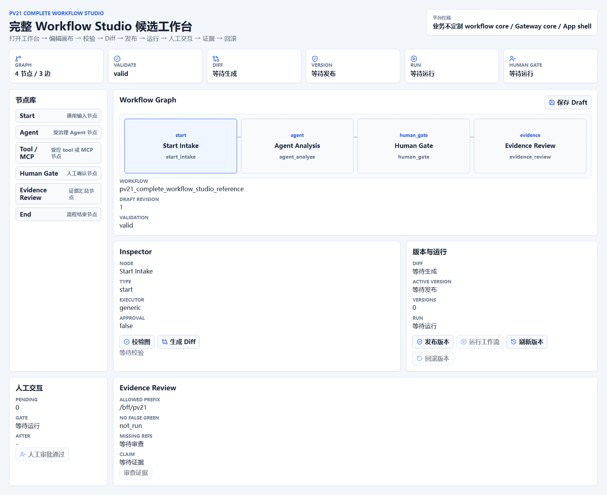
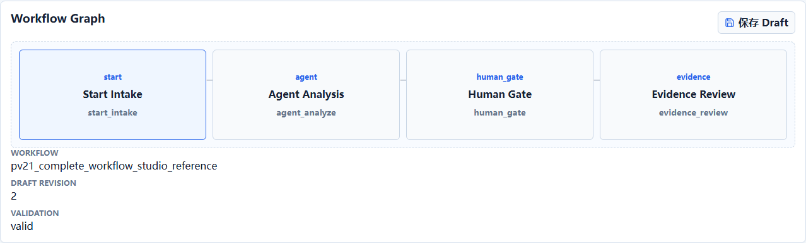
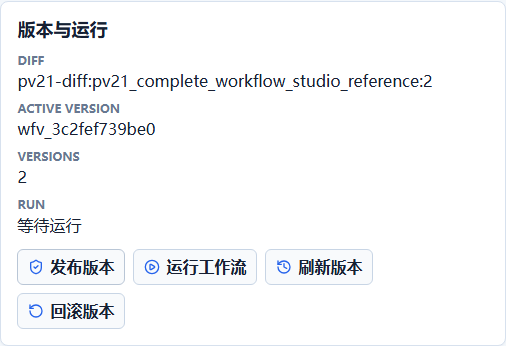
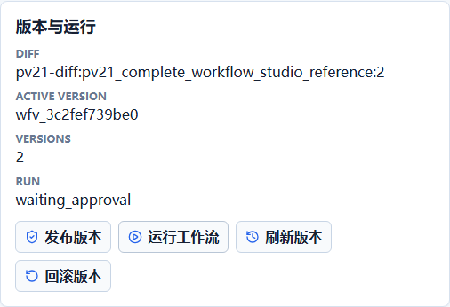
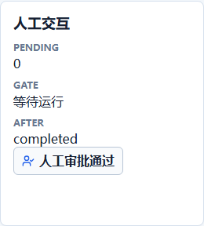
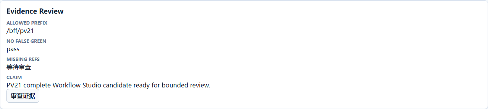
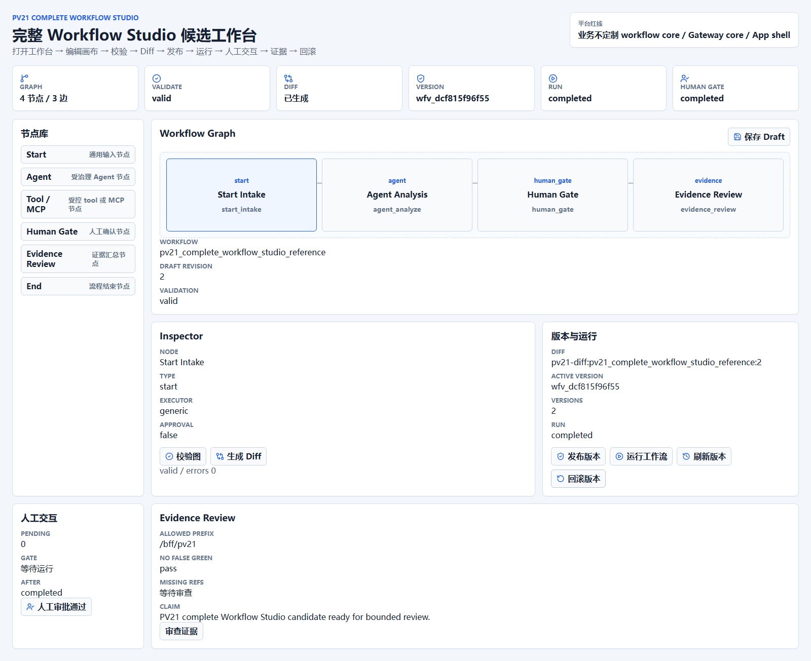

本报告由 Chrome CDP 自动化执行真实用户路径生成。浏览器只访问 /bff/pv21，未直连 /v1/rpc 或内部 runtime 路径。
目标体验是用真实 Workflow Studio 候选页面完成打开工作台、编辑画布、校验、Diff、发布、运行、人工交互、证据审查和版本回滚。当前实现通过 ?studio=pv21-complete-workflow-studio 页面调用 /bff/pv21/*，后端落到通用 WorkflowTemplate、WorkflowDraft、WorkflowVersion、WorkflowInstance、StationRun、QualityEvaluation 与审批实体。
本报告不把该阶段声明为生产可用、完整 Agent executor 或外部应用接入完成；这些仍属于后续开发目标。






